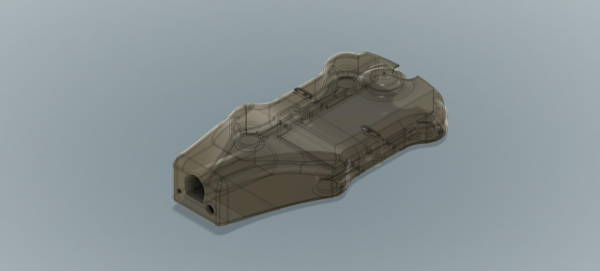

FaunaTag — Wearable Biometric Tag for Whale Health Monitoring
Contributing to the mechanical redesign of FaunaTag, a biometric wearable, at FaunaLabs — using CAD to improve shape, durability, waterproofing, and deployment reliability for long-term physiological data collection on whales off the coast of Brazil.